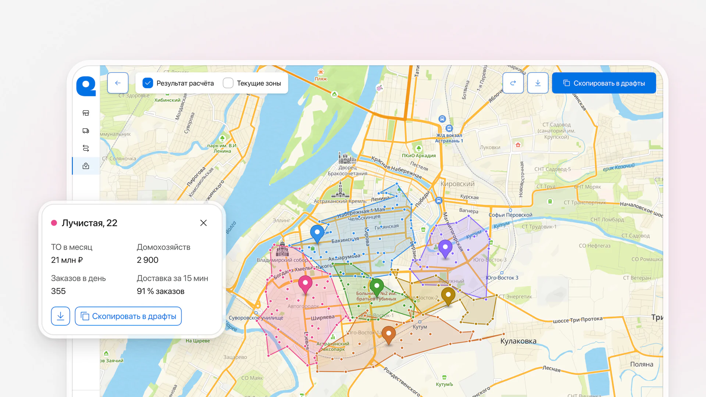
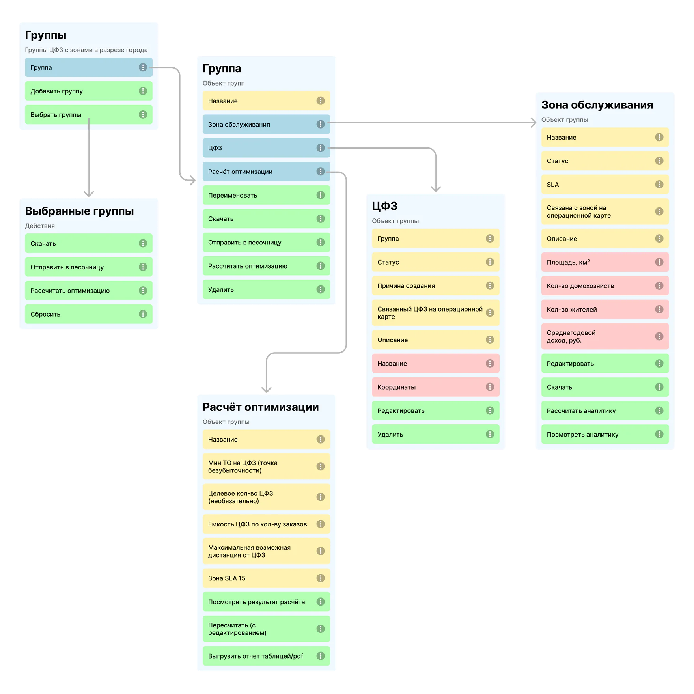
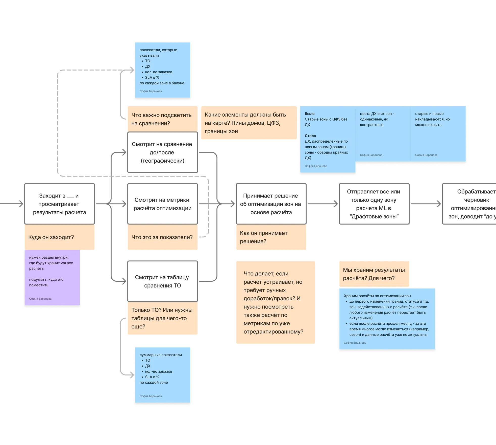
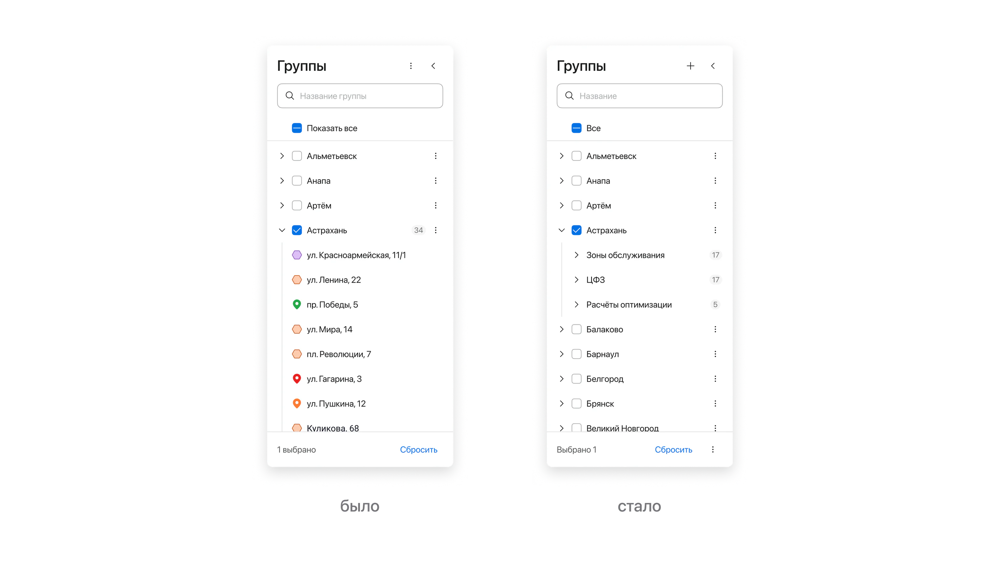
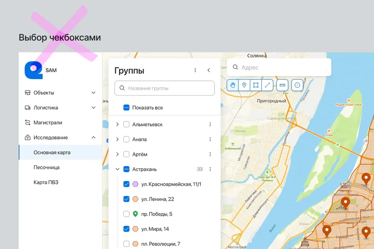
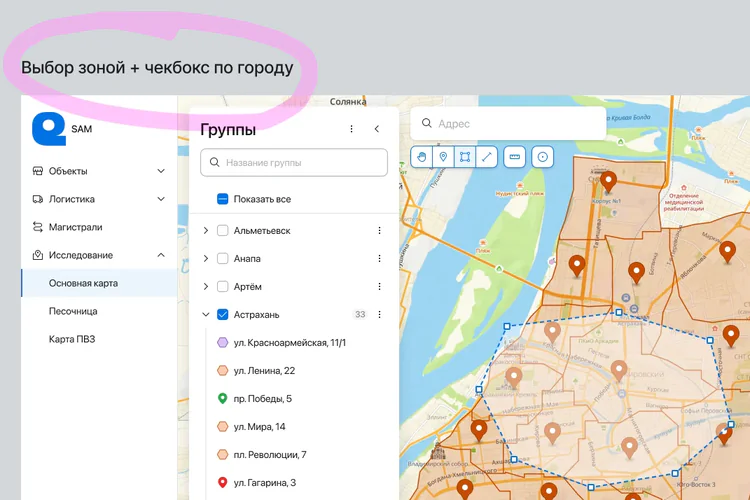
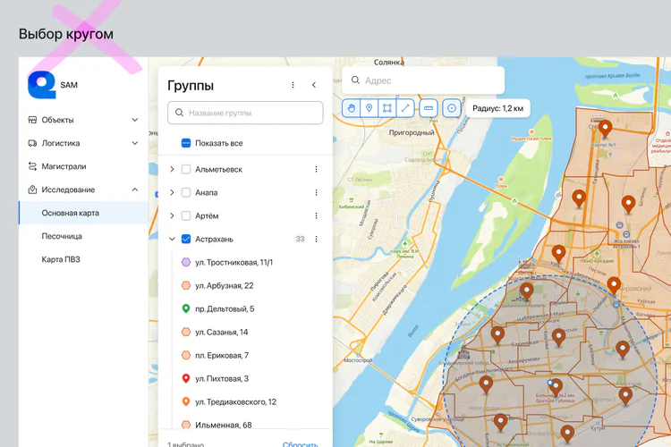

Оптимизация зон обслуживания: ML предлагает, решает человек
Внутренний B2E-инструмент Самоката для логистики. Спроектировала раздел, где отдел развития собирает, хранит и сравнивает ML-расчёты по оптимизации зон обслуживания, чтобы решать, где открывать, перераспределять и закрывать дарксторы.

Контекст
Продукт управления логистической сетью SAM (Service Area Management) — внутренний веб-инструмент Самоката: сеть дарксторов, их зоны обслуживания на карте и связи между складами. Раздел оптимизации зон обслуживания я проектировала как часть интеграции с ML.
Раньше отдел развития перераспределял зоны вручную, по экспертным оценкам и разрозненным данным. Делать это приходилось часто: одни дарксторы простаивали, другие были перегружены. При закрытии даркстора клиентов нужно было перевести на соседние зоны, при открытии нового границы вокруг тоже сдвигались. От этого росли логистические издержки и риск по SLA. Поэтому расчёт зон автоматизировали: ML-инженер обучил модель, которая пересчитывает границы по прогнозу нагрузки.
Проблема
Модель считала, но превратить её расчёт в решение по сети было нельзя.
Процесс
Перевела устройство модели в требования
Модель оперирует параметрами: минимальный товарооборот, ёмкость по заказам, максимальная дистанция, зона SLA. На выходе она даёт сценарии: какие дарксторы оставить, какие закрыть, какие зоны объединить.
Расчёт идёт от двадцати минут до суток, и результат сразу не покажешь. Поэтому выделила его в отдельный объект: он хранится со статусом, и к нему можно вернуться. Параметры пользователь задаёт сам при запуске, а способ оптимизации стал одним из них: у модели два режима, с делением и с закрытием зон.
Нашла, куда встроить фичу
На дискавери вместе с командой решили встроить фичу во вкладку «Основная карта», а не делать отдельный раздел: на него у разработки не было ресурса, а в «Основной карте» отдел развития уже правил границы зон по городам. Моя задача была найти, где внутри раздела живёт расчёт. Для этого составила объектную модель и флоу: от выбора зон и параметров до отправки результата в драфт (черновик зон).


Перестроила дерево города
В задаче этого не было, но по ходу я заметила, что третий тип объектов в дереве города потеряется: зоны и дарксторы и так шли одной простынёй, без сортировки ни по алфавиту, ни по статусу. Разбила список на три группы внутри города: зоны обслуживания, дарксторы и расчёты оптимизации. Новая структура работает во всём разделе «Основная карта», а не только для расчётов.

Продумала, как отбирать зоны под расчёт
Перебрала несколько способов и на созвоне с пользователями отсеяла лишнее. Выбор отдельными чекбоксами отпал: зоны и дарксторы лежат в разных списках, и отмечать пришлось бы по очереди то одно, то другое. Выделение кругом неточное: в него попадают и ненужные зоны. Остались два способа под разные ситуации. Обводкой пользователь отмечает область по точкам, и в выделение попадают только активные зоны: так удобнее в крупных городах с множеством районов. Небольшой город проще отметить целиком, чекбоксом у его названия: в нём бывает до 20 зон, и галочка быстрее обводки.

1
2
3Сверяла логику с пользователями
Сроки не оставляли места для глубинных интервью и юзабилити-тестов, поэтому логику раздела я выстраивала на созвонах с руководителем отдела развития и командой, а постановку бизнес-аналитик писал уже по моим макетам. Спорные места заложила в макет как гипотезы: если результат виден до отправки в драфт, отклонённых рекомендаций будет меньше; если у каждой предложенной зоны видны её показатели, модели будут больше доверять.
Кликабельный прототип собирать не стала: он не показал бы главного, поведения интерфейса на реальных ML-данных и карте.
Решение
Спроектировала жизненный цикл расчёта: от отбора зон и запуска до сравнения результата и переноса в драфт.
Обводка та же, что при создании зоны
Зоны под расчёт отбирают обводкой на карте или чекбоксом в дереве, сразу по городу или группе. Инструмент обводки в «Основной карте» уже был: им рисуют новые зоны. Его же я взяла для расчёта, так что пользователю он уже знаком, а разработке не пришлось делать его с нуля. Чекбоксом отмечают группы и вызывают расчёт из их меню. Дальше пользователь задаёт параметры и запускает расчёт, а тост подсказывает, где следить за статусом.
Расчёт хранится, пока актуален
Расчёты лежат в дереве города, в группе «Расчёты оптимизации», со статусом «в процессе», «готов» или «ошибка». Расчёт с ошибкой можно перезапустить или удалить. Готовый хранится месяц или до первого изменения зон, которые в нём участвовали, а потом пропадает из списка: за месяц может смениться сезон, и данные устареют. Такое правило мы приняли вместе с отделом развития и командой.
Текущие зоны включаются прямо на расчёте
Готовый расчёт открывается на карте с границами, которые предлагает модель. Чекбокс «Текущие зоны» добавляет на карту нынешние границы пунктиром, и сразу видно, как сдвинулась сеть и какие дарксторы закроются. Так сравнивать попросил отдел развития: текущие зоны удобнее подложить как кальку, чем сверять две карты. По клику на зону открываются её показатели, а подходящие зоны пользователь копирует в драфт, по одной или все сразу, и дальше правит вручную.
Результат
Раздел запустили уже после моего ухода по сокращению. По словам продакта, он работает: по расчётам модели уже оптимизировали два города, и инструментом пользуются для решений по сети.
Для разработки и бизнес-аналитика подготовила макеты с аннотациями, а на финальном созвоне презентовала раздел продуктовой команде, пользователям и ML-инженеру.
Что сделала бы дальше
Таблицу, где показатели текущих зон стоят рядом с показателями расчёта, я сразу вынесла из первой итерации: в оставшееся время её было не успеть, и команду я предупредила заранее. С неё я бы и начала следующую итерацию, а заодно проверила бы на пользователях сценарий запуска расчёта. Гипотезы оценивала бы по доле расчётов, из которых хотя бы одна зона доходит до драфта.